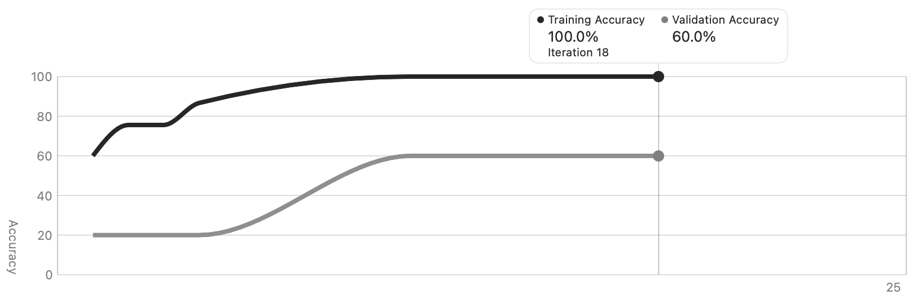
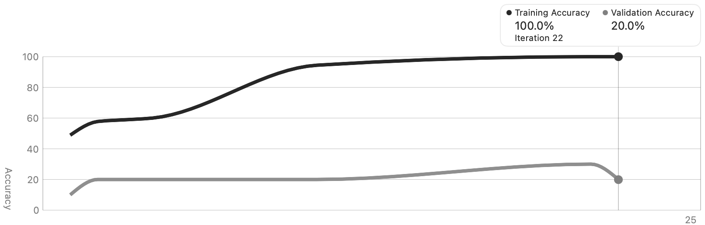
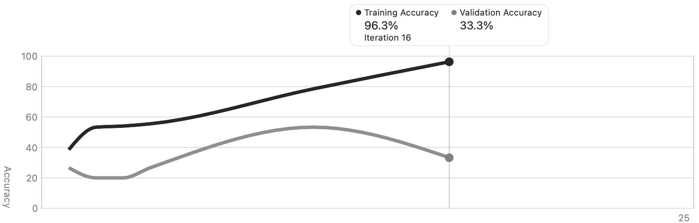
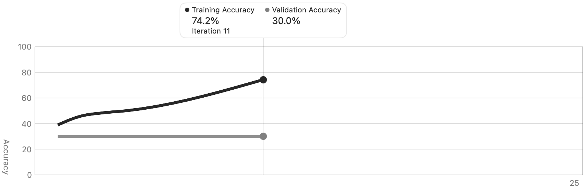
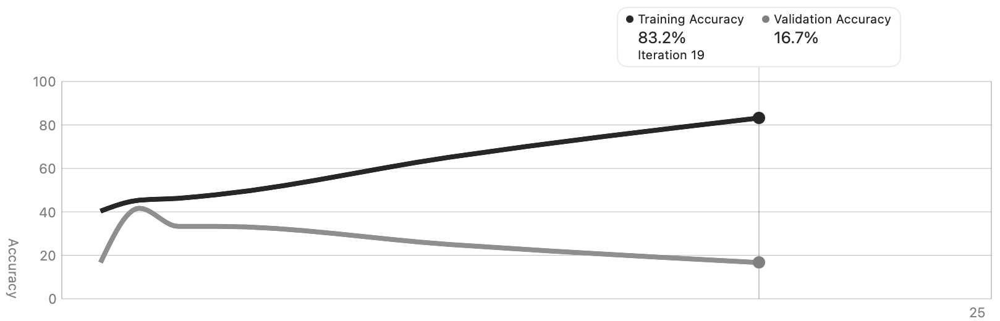
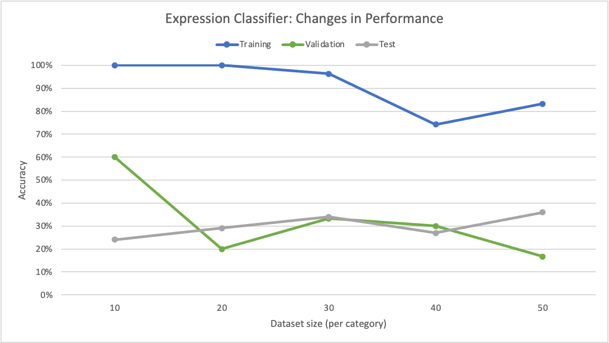
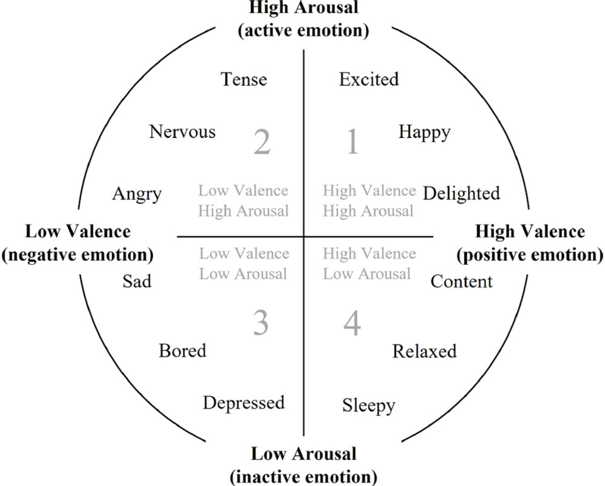
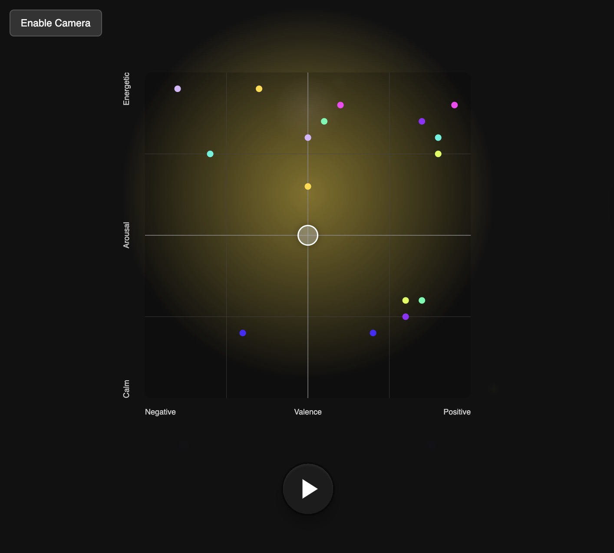

Energetic
Calm
Negative
Positive
Drag the glowing point, or turn on your camera and let your face steer.
Make a face, hear a genre. Your expression moves a point across an emotion map, and the music follows.
Drag the glowing point, or turn on your camera and let your face steer.
Part 1 · The original study (Sept 2025)
A project for my Design with AI class at the University of Miami with Dr. Ching-Hua Chuan. The question: how does training-set size affect a facial-expression classifier built in Apple's CreateML? I built five datasets of increasing size, trained a model on each, and compared them on one fixed test set. Then I sketched a creative use for the model: steering generated music with your face.
I used the public facial_expressions repository (uploaded by Brian Lee Yung Rowe). CreateML wants one folder per label, so a small script read the label CSV and copied each image into a folder named after its emotion.
import os, shutil
import pandas as pd
csv_path = "facial_expressions-master/data/500_picts_satz.csv"
images_folder = "facial_expressions-master/images"
output_base = "Expressions"
df = pd.read_csv(csv_path)
for _, row in df.iterrows():
filename, emotion = row["image"], row["emotion"]
src = os.path.join(images_folder, filename)
dest_folder = os.path.join(output_base, emotion)
os.makedirs(dest_folder, exist_ok=True)
if os.path.exists(src):
shutil.copy(src, os.path.join(dest_folder, filename))
else:
print(f"File not found: {src}")That produced five emotions: anger, fear, happiness, neutral and sadness. The largest training set needed 50 images per emotion plus 20 for testing, so every class needed at least 70. Fear and sadness came up short, so I pulled more labeled images from the repo's legend.csv and from student-submitted test images labeled in their filenames. Fear ended at 74 images and sadness at 181.
A second script then built six datasets: one test set of 20 images per emotion, and five training sets of 10, 20, 30, 40 and 50 per emotion, with no overlap between test and training images.
import os, random, shutil
from PIL import Image
base_dir, output_dir = "Expressions", "Datasets"
random.seed(42) # reproducibility
emotions = [d for d in os.listdir(base_dir) if os.path.isdir(os.path.join(base_dir, d))]
def copy_as_jpg(src, dst):
if os.path.splitext(src)[1].lower() == ".png":
Image.open(src).convert("RGB").save(os.path.splitext(dst)[0] + ".jpg", "JPEG")
else:
shutil.copy(src, dst)
# 1. fixed test set: 20 per emotion
remaining = {}
for emotion in emotions:
src_dir = os.path.join(base_dir, emotion)
dst_dir = os.path.join(output_dir, "TestSet", emotion)
os.makedirs(dst_dir, exist_ok=True)
files = [f for f in os.listdir(src_dir) if f.lower().endswith((".jpg", ".jpeg", ".png"))]
for f in random.sample(files, 20):
copy_as_jpg(os.path.join(src_dir, f), os.path.join(dst_dir, f))
files.remove(f)
remaining[emotion] = files
# 2. training sets from what's left
for size in [10, 20, 30, 40, 50]:
for emotion in emotions:
dst_dir = os.path.join(output_dir, f"TrainSet_{size}", emotion)
os.makedirs(dst_dir, exist_ok=True)
for f in random.sample(remaining[emotion], size):
copy_as_jpg(os.path.join(base_dir, emotion, f), os.path.join(dst_dir, f))Keeping the test set identical across all five builds is what makes them comparable. While sorting, I also noticed that some labels didn't match my own reading of the face, which comes back later.
Each model is scored on accuracy, plus macro-averaged precision and recall across the C = 5 classes:
| Images / emotion | Iterations | Train acc. | Validation acc. | Test acc. | Test precision | Test recall |
|---|---|---|---|---|---|---|
| 10 | 18 | 100.0 | 60.0 | 24 | 23.0 | 24.0 |
| 20 | 22 | 100.0 | 20.0 | 29 | 33.4 | 29.0 |
| 30 | 16 | 96.3 | 33.3 | 34 | 35.2 | 34.0 |
| 40 | 11 | 74.2 | 30.0 | 27 | 25.4 | 27.0 |
| 50 | 19 | 83.2 | 16.7 | 36 | 36.4 | 36.0 |






Facial expression recognition turned out to be hard even with small, controlled datasets. Every model scored very high in training and far lower on validation and test data, a clear sign of overfitting. More images didn't steadily help: 40 per emotion did worse than 30. The best generalization came from 50 per emotion, which suggests more varied data helps, but the gains were uneven and depended on exactly which images landed in each set.
Some expressions were consistently harder. Sadness was the worst, with some models never recognizing it at all, while anger collected lots of false positives. Negative expressions with subtle or overlapping cues were harder to separate than distinct ones like happiness.
Mislabeled images and image quality probably hurt too. Bigger datasets such as Affectiva-MIT (AM-FED) or AffectNet might do better, but both are shared only on request. My suggested fix at the time: use a chain of models. Find the face first, crop away everything around it, then classify the facial features.
Emotions can be placed on a grid of valence (negative to positive) and arousal (calm to energetic), the same circumplex Ferreira et al. use to steer symbolic music generation. If a classifier can place your face on that grid, you can play music with your expression. Because the model isn't very accurate, it works best as a toy for exploring the idea, and a draggable point means a wrong guess never leaves you stuck.


Part 2 · The rebuild (Nov 2026)
This site does what the write-up suggested: find the face first, crop away everything else, then classify the facial features. And it runs entirely in the browser, so it can live on GitHub Pages.
mouthSmileLeft or browInnerUp. Background, lighting and hair stop mattering.I re-ran the original protocol: a fixed 20-per-emotion test set and training sets of 10–50 per emotion. The new numbers are averaged over 20 random splits so one lucky split can't skew them.
The full model (trained on every usable image, scored on a held-out 20%) is shown below as a confusion matrix: rows are the true labels, columns are what the model guessed. Happiness is easy. Fear is the weak spot: the dataset only has about 70 fear images, many of them hard to tell apart from surprise or neutral. Mislabeled images are still in there too. The Calibrate button helps by learning what your resting face looks like, and you can always drag the point by hand.
Made by Anish Ghosh for Design with AI, University of Miami.